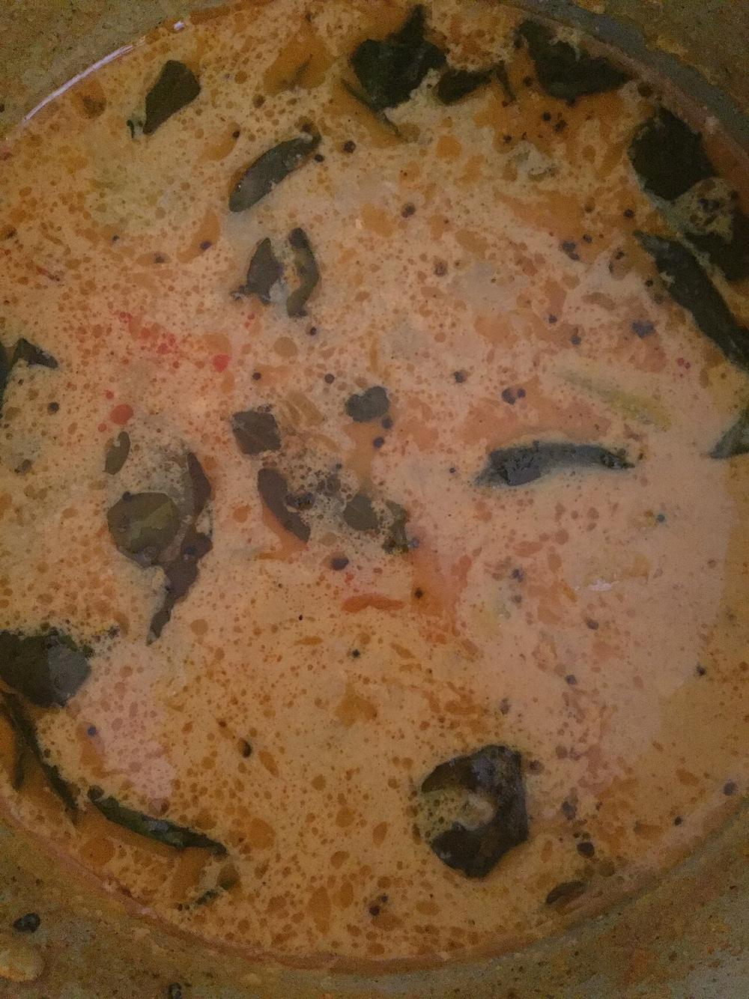

Contains: dairy
Ingredients
Quantities for 4.
- 400g, peeled and cut into 2cm cubes Ash Gourdor bottle-gourd
- 1 1/2 cups, whisked smooth Yogurtsour but not sharp
- 3/4 cup, freshly grated Coconut
- 3 Green Chilli
- 1 tsp Cumin Seedsfor the paste
- 2 tbsp, soaked 30 minutes Toor Dalthickens the gravy
- 1/2 tsp Turmeric
- 2 tbsp Coconut Oil
- 1 tsp Mustard Seeds
- 2, broken Dried Red Chilli
- 12 Curry Leaves
- 1/4 tsp Asafoetidause compounded-free hing to keep this gluten-free
- 2 tbsp, chopped Coriander Leavesoptional
- to taste Salt
- 1 1/2 cups Water
Equipment
stovetop, blender
Before you start
- Soak the toor dal in warm water for 30 minutes before you start; it grinds smooth and thickens the curry without any flour.
- Whisk the yogurt with 1/2 cup water until completely lump-free and leave it at room temperature so it does not shock the hot pot.
- Grind the coconut paste first and keep it ready — the curry comes together in five minutes once the gourd is cooked.
Method
- Simmer the ash gourd with the turmeric, 1 tsp salt and 1 cup water for 10 minutes until a knife slides through but the cubes still hold shape.Overcooked gourd turns to mush and clouds the curry.
- Meanwhile grind the coconut, green chillies, cumin seeds and drained toor dal with 1/2 cup water to a very smooth, thick paste.Grind longer than feels necessary — any grit in the paste stays grit in the curry.
- Stir the paste into the cooked gourd and simmer 5 minutes on medium, stirring often, until the raw coconut smell is gone and the gravy coats the spoon.
- Take the pot off the heat and let it stop bubbling, about 2 minutes.
- Pour in the whisked yogurt, stirring continuously, then return to the lowest heat.Adding yogurt to a boiling pot will split it. Off the heat, then low, always.
- Warm through 3 minutes without letting it boil — the surface should barely tremble. Check the salt.
- Heat the coconut oil in a small pan, crackle the mustard seeds, then add the broken red chillies, curry leaves and hing and fry 10 seconds.
- Pour the tempering over the curry, scatter the coriander leaves and serve hot with plain rice.
Storage
Keeps 2 days refrigerated. Reheat on the lowest heat, stirring, and never let it boil or the yogurt will curdle.
Nutrition Good estimate
| Per serving325 g | Per 100 g | |
|---|---|---|
| Calories | 248+ kcal | 76+ kcal |
| Protein | 8.5+ g | 2.6+ g |
| Carbohydrate | 21.4+ g | 6.6+ g |
| of which sugars | 7.6+ g | 2.3+ g |
| Fibre | 5.7+ g | 1.8+ g |
| Fat | 15.8+ g | 4.9+ g |
| of which saturated | 12.1+ g | 3.7+ g |
| of which unsaturated | 2.4+ g | 0.7+ g |
The + means ingredients given to taste rather than by weight are counted as zero, so the true figure is a little higher than shown. Worked out from the listed quantities; most of the ingredient list could be weighed. Ingredients given to taste rather than by weight are counted as zero, so the real figure is a little higher than this. The + says so. Some ingredients have no exact match in the nutrient database and use the nearest equivalent: asafoetida, ash gourd, curry leaves. Estimated from raw ingredients using USDA FoodData Central. Cooking changes are not modelled, and added salt is excluded, so sodium is not given.
Recipe v1.0.0, last updated 2026-07-31. Curated for Khaana and kept under version control.